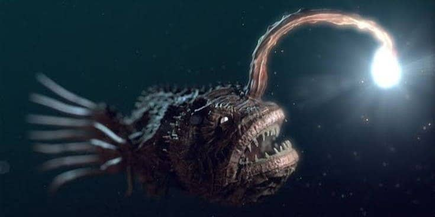

üêô Zona Abisal
La oscuridad es total. Las criaturas aquí tienen adaptaciones extremas: bioluminiscencia, cuerpos blandos y gran resistencia a la presión.
Estos peces pueden llegar a medir entre los 30 y 58 cm de color azul oscuro, negro o plateado.
Principalmente se alimenta de crustáceos, gusanos flecha y peces pequeños.
Se cree que desova externamente. Significa que las hembras liberan huevos en el agua para posteriormente ser fecundados por los machos.
Apesar de su apariencia temible es inofensivo para los humanos, sin embargo este pez puede ser presa del reloj anaranjado.

Su cuerpo es triangular aunque su cuerpo es pequeño en conjunto con sus patas puede llegar a medir 20 cm de tamaño.
Su alimentacion esta basada en crustaceos pequeños, invertebrados como gusanos poliquetos y algas.
Los cangrejos araña japoneses pueden producir hasta 1,5 millones de huevos por temporada. Sin embargo, solo algunos logran sobrevivir.
A pesar de su intimidante tamaño no cazan presas activamente, prefieren escarbar en el océano. También denominados "cangrejos decoradores" esto a qué se les ha observado decorando sus caparazones con anémonas y plantas que les permite poder camuflarse protegiéndolos de otros depredadores.
Miden un aproximado de hasta 6 pulgadas de largo.
Se alimenta de Ctenóforos peine.
Machos y hembras se guían entre sí mediante atrayentes acuáticos. Solo después del contacto, los machos muestran evidencia de distinguir entre machos y hembras en diferentes etapas reproductivas; generalmente abandonan a los machos y a las hembras no receptivas, comienzan a cargar a las hembras receptivas y copulan con las hembras recién mudadas. Tras el contacto, las hembras en diferentes etapas reproductivas adoptan diferentes posturas que ayudan al macho a expresar comportamientos reproductivos apropiados.
No es un riesgo para el ser humano.
Mide un total de 2 pulgadas de largo, un equivalente de 5 cm.
Zooplancton gelatinoso, crustáceos, cnidarios, tunicados pelágicos y otros animales gelatinosos.
Las hembras de anfípodos barril liberan a sus crias dentro de la salpa.
Usan sus afiladas garras para atrapar una salpa y luego arranca los tejidos blandos de su interior. Esa salpa es mas que un alimento y lo lleva el cadaver para ser su hogar.

Llega a medir hasta 50 cm incluyendo su extension de patas. Una de sus caracteisticas distintiva de la araña de mar son sus patas largas y multiarticuladas lo que le permite nadar y no quedarse atorada en el fango del fondo marino.
Se alimenta de esponjas, moluscos y cnidarios. Cuando encuentra un animal de cuerpo blando para comérselo pica al animal perforándolo y después succiona sus víceras com si fuera un batido.
La araña de mar macho se monta sobre la hembra, se acoplan hasta que empatan poros. La hembra libera sus huevos y luego elmacho los mezcla con su esperma y los carga en sus organos transportadores hasta que esten listos para nacer.
Son llamadas depredadoras suctoriales, por que perforan la piel de sus presas usando la probóscide para posterior succionar lo que contiene su cuerpo.
Este pez puede llegar a medir hasta los 100 cm de largo.
Crustáceos, gusanos, calamares, peces pequeños.
Las hembras maduras dispersan sus huevos en hábitats de aguas profundas donde seran fecunhdados externamente por los machos. Los embriones eclosionan en larvas planctónicas que flotan durante mese para posterior asentarse al fondo marino
El bacalao negro puede llegar a consumirse y a la vez una fuente de preocupación pues este tiene un alto contenido de mercurio.
Miden 30 cm de ancho.
Plancton, peces pequeños y otros nutrientes que puedean estar presentes en la corriente.
Las anemonas puede reproducirse por si solas.
Su forma de caza es esperar a su presa desprevenidodas que pasen cerca pues son carnivoros. Las anemoras poseen neurotoxinas y si ocurriera un minimo contacto puede generar microlesiones y reacciones como:
- Picazón y ardor
- Enrojecimiento
- Náuseas
- En casos extremos la pérdida del conocimiento
Pueden llegar a medir de 30 cm.
Zooplancton gelatinoso, casas de larvas abandonadas, mudas de crustaceos, diatomeas muertas y bolitas fecales y nieve marina.
El calamar vampiro macho pasa su esperma a la hembra usando su sifón que es una estructura muscular en forma de cilindro que poseen todos los cefalópodos. La hembra utiliza el esperma para fertilizar sus huevos y los libera unos a la vez.
Cuando se siente amenazado levanta los brazos para exponer sus puras y protegerse de amenazas, expulsa una mucosidad bioluminiscente que asusta a depredadores en la oscuridad de las profundidades.
Aunque no se tiene una idea clara se estima que puede llegar a superar de 12 a 14 metros de longitud.
Se alimenta principalmente de materia orgánica muerta o detritos.
Las hembras incuban aproximadamente unos 3.000 huevos y los transporta consigo en un gran saco hasta que eclosionen. Durante todo este proceso no se alimenta y brinda oxigeno para sus huevos, cuando esten apunto de nacer muy posiblemente este apunto de morir.
Si bien los calamares son carnivoros y pueden ser depredadores, el calamar de ojos negros no es una amenza para los humanos ni para otros peces que se encuentren en su hábitat.

Suelen medir entre 20 y los 60 cm, puede modificar ligeramente su color para mezclarse con su entorno.
Es un animal omnivoro y su alimentacion es principalmente algas, detritos y pequeños peces.
El único propósito de los machos es encontrar a una hembra en la oscuridad del abismo, pegarse a ella y fusionarse con su cuerpo, para convertirse en un "saco de esperma" que la hembra puede utilizar cuando quiere reproducirse.
A pesar de su aspecto aterrador es muy dócil pero a la vez territorial por lo cual si otro pez se mete a su hábitat responderá con ferocidad.